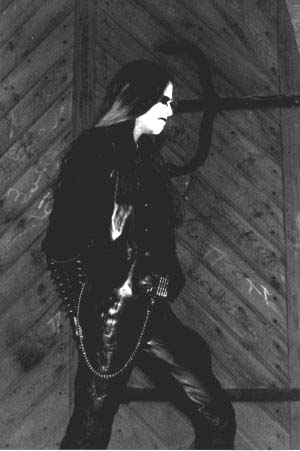
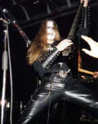
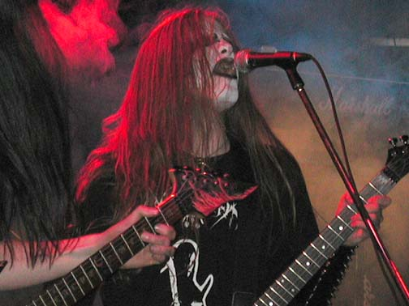

Judas
Iscariot
Judas
Iscariot
Иуда Искариот. Это имя ненавистно христианской традиции, как имя предателя своего учителя и сына бога. Оно проклято, как страшный смертный грех.
Эндрю Харрис – Akhenaten (Judas Iscariot). Этот человек не предавал христианского бога. Он просто ненавидит его и само христианство. Он одержим своей ненавистью в той же степени, что и ее причинами. Он говорит о своей ненависти к христианству открыто и свободно. Он реализует ее лишь так, как хочет и может – ведя пропаганду религиозной ненависти.
Akhenaten (Andrew Harris) – вокал, бас, гитара, ударные. Задействован в творчестве Maniac Butcher, Sarcophagus, Seeds Of Hate, Weltmacht и др.
Управляет лейблом Breath of Night Records.
Занимается изданием Nihilist Resistance.
CONTRA DEI: Расскажи историю своей группы. Какие альбомы выпущены? Что ожидается в будущем?
Akhenaten: Judas Iscariot был вызван на этот свет Ненавистью к ублюдкам христианского невежества в 1992 году. Я очень скоро прекратил поиск других музыкантов, поскольку вокруг меня не было никого, кто был бы заинтересован в осуществлении свирепой Black Metal пропаганды. Чуть позже в этом году, в полном одиночестве я записал свой первый материал «Heidegger». За этой записью последовало demo 1993. Это demo, распространенное в количестве всего лишь двадцати немаркированных кассет, попало в руки Одина (Odin) c Moribund Records, который связался со мной по поводу выпуска дебютного альбома. За тем последовал альбом «The Cold Earth Slept Below», вышедший в 1995. После этого я записал и издал еще несколько работ, которые на данный момент замыкает MCD/MLP «Moonlight Butchery» под маркой No Colours Records.
CD: Judas Iscariot – не единственное детище твоего творчества. Известно о твоем проекте, который имеет культовый статус в андеграунде, благодаря своей проарийской NS концепции. Твои комментарии по этому поводу.
A: Должно быть, ты говоришь о Weltmacht. Да, действительно при сведении материала были использованы некоторые словесные высказывания определенного значения. Но при этом совершенно точно то, что мы не имеем ни какого отношения к политике. Мы принимали участие в компиляции «The Night And The Fog», но я бы настоял на том, чтобы биография этой группы рассматривалась вне политики.
CD: NS – близка ли все же тебе эта тема? Если да, то чем и почему? Твое мнение о тех, кто слагает воедино 666 и 88?
A: Не могу сказать ничего, кроме того, что Black/Death metal имеет отношение лишь к Тотальной Смерти без всяких компромиссов. Я не поддерживаю какую-либо веру, тем более ту, которая устремлена к цели, заключающейся в счастье «истинно арийских детей».
 CD:
Ты помогал в концертной деятельности таким группам, как: Seeds Of Hate, Maniac
Butcher …Это были разовые случаи твоей поддержки или же ты являешься постоянным
участником этих групп? Случались ли когда- либо живые выступления Judas Iscariot?
CD:
Ты помогал в концертной деятельности таким группам, как: Seeds Of Hate, Maniac
Butcher …Это были разовые случаи твоей поддержки или же ты являешься постоянным
участником этих групп? Случались ли когда- либо живые выступления Judas Iscariot?
A: Я принимаю участие в творчестве нескольких проектов как сессионный музыкант лишь для поддержки других достойных культов. Я делаю это для поддержки Black Metal культа в целом, но вовсе не для возведения культа вокруг своей персоны. Какое-то время назад все проекты, в которые я был вовлечен, влачили свое существование в тени Judas Iscariot. Поэтому я стал создавать множество проектов анонимно или под разными именами. Сейчас я вовлечен в деятельность во многих уголках андерграунда, и мое участие очень похоже на тайный заговор. Все мои проекты я рассматриваю как абсолютно самостоятельные, но не как продолжение Judas Iscariot.
CD: Ты жил в Америке. Как известно сейчас ты живешь в Германии. В чем причина твоего переезда? Каково твое мнение об американской Black Metal сцене?
A: …да, если бы я не покинул США, я бы, скорее всего, был бы уже мертв. Я уверен в этом. Я не смог бы прожить и секунды больше в этом мусорном болоте религиозного фундаментализма, тошнотворного плаксивого либерализма и беспредельного капитализма. Поэтому я и уехал. Здесь, в Германии, я чувствую себя более комфортно, и для меня так легче жить. Я все же не могу сказать, что я счастливый человек. Но этот переезд, возможно, добавил несколько лет к моей жизни, чтобы я смог дальше выражать свое одинокое видение всего окружающего с помощью музыки.
Я глубоко уважаю американскую Black Metal сцену. Я знаю, каково это, жить и взрослеть в этой стране. Это значит быть в состоянии постоянной войны и находиться лицом к лицу с омерзительной действительностью христианской чумы. Поэтому я считаю, что американские Black Metal группы имеют свою особенную черту. Они особенно честны в своей ненависти и поэтому особенно едины. Этого не найти во многих европейских группах.
 CD:
Можешь ли ты назвать какие-либо немецкие группы своими коллегами и братьями?
Кто, наоборот, вызывает лишь презрение? Назови какие-нибудь новые имена на
немецкой сцене.
CD:
Можешь ли ты назвать какие-либо немецкие группы своими коллегами и братьями?
Кто, наоборот, вызывает лишь презрение? Назови какие-нибудь новые имена на
немецкой сцене.
A: Я наблюдаю немецкую сцену извне, я не вовлечен полностью в нее. У меня есть несколько контактов с музыкантами, но большинство людей меня не интересует вовсе. Здесь в изобилии водятся мелкие болтуны и глупые тусовщики, которые способны лишь раздражать. Я занимаюсь организацией концертов и управляю своим лейблом Breath Of Night, но опять же делаю это для культов, для групп, которые этого заслуживают. Есть несколько хороших немецких команд, но при этом здесь существуют тонны бездуховного мусора. Но я не хотел бы упоминать достойные, на мой взгляд, имена в этом интервью. Это не моя обязанность – говорить людям, что хорошо, а что плохо.
Я ненавижу всякого, кто не позволил духу Black Metal поглотить всего себя целиком, и кто не посвятил ему все свое существование. Я ненавижу людей, которые мнят себя принадлежащими к Black Metal, но в своей обычной жизни остаются обычными уродливыми тупицами со своими обычными связями с такими же нормальными идиотами. По этой причине я ненавижу всех, кто заявляет о своей причастности к Black Metal, а также тех, кто считает себя фанатом Judas Iscariot. Я живу для Black/Death Metal андеграунда и ни для чего больше, поэтому я не терплю тех, для кого это лишь хобби или один из способов развлечения.
CD: Расскажи о деятельности Breath Of Night. Какие релизы уже были? Что запланировано на будущее? Какие группы никогда не будут выпущены на твоем лейбле?
A: Очередным релизом Breath Of Night будет дебютный MCD/MLP Manticore «Ritual Cleansing Of The Whore». За ним последует выпуск альбома Nuclear Death «All Creatures Great And Eaten», записанный еще в 1992 году. Если ты не знаком с этой работой, то это ранее не выпускавшийся четвертый альбом этой группы. Breath Of Night возымела честь выпустить его в должном виде. Будет так же выпущен альбом Evocation (Швеция), а именно их дебютный LP/CD. Evocation представляют собой шведский death metal старой школы, в духе старых мастеров ранних 90'х. Очень хороший материал, и это именно то, чего так не хватает нынешней Black/Death metal андеграундной сцене.
Сейчас я так же организую мини-тур под лозунгом: МАРШИРУЯ НАВСТРЕЧУ УНИЧТОЖЕНИЮ ХРИСТИАНСТВА (MARCHING TOWARDS CHRISTIAN EXTERMINATION) при участии Manticore, Black Witchery, Armagedda и Avenger. Концепция этой акции заключена в объединении Black и Death metal в один единый антихристианский фронт.
CD: Твоя музыка очень мрачная и исполнена ненависти. Что вдохновляет тебя на ее создание? Кого ты ненавидишь? Для тебя ненависть – лишь вдохновение или нечто большее?
A: Конечно же, меня вдохновляют другие группы. Ранние работы Graveland, Burzum, Darkthrone. Но более всего Judas Iscariot вдохновлен ночью, тьмой, холодом, тотальным чувством мести, бездонным ночным небом, мистической философией и мечтой о сожжении мира в огне ярости Ада.
Ненависть – из числа самых естественных состояний человека. Когда мы испытываем ненависть, и когда она выражается в насилии – мы становимся художниками от природы и превосходим самих себя. Я признаю насилие как высшего судью от природы. Я никогда не принижу значения насилия по отношению к миру, потому что мир есть компромисс, а компромисс есть слабость.
CD: Ты известен как сторонник одиночества. Что ставит тебя в такие условия?
A: Я творю всегда в полном одиночестве. Я жил в одиночестве в общем и целом десять лет, поэтому большую часть времени я остаюсь наедине со своими мыслями и ощущениями. Я зашториваю окна, чтобы оградить себя от солнечного света и того, что снаружи. Порой я не знаю, день сейчас или ночь. В такой обстановке начинаются мои духовные изыскания, в результате которых рождаются мои композиции. Я полностью концентрируюсь на работе и пишу очень быстро. На написание одного альбома мне может понадобиться всего два дня, как это случилось при работе над «Dethroned, Conquered and Forgotten»…Этапы процесса написания и записи зачастую выпадают из моей памяти. Я не могу их запомнить, так как во время творчества мой дух покидает мое тело и этот мир…
Я сам отталкиваю людей от себя, потому что когда кто-то пытается стать ближе ко мне, я начинаю его ненавидеть. Я веду себя так со всеми, и это неизбежно приводит к существованию в полном одиночестве. Но, кажется, что это единственно возможный путь моего существования. Я не хочу больше это обсуждать, так как это становится вторжением во владения моей личной жизни, которую никому не нужно знать, читая интервью с Judas Iscariot.
CD: Антихристианство и Сатанизм... Что ты думаешь по поводу того, что антихристианство рассматривается как тождественное явление по отношению к Сатанизму?
A: Я не сатанист ни в коем смысле этого слова. Я нигилист, и единственная реальность для меня – это Смерть. Смерть есть совершенное вечное забвение, величественный холод, который обнимет мою суть навсегда. Именно потому, что это будет навсегда, неизменно, это является самым прекрасным. Поэтому я возвеличиваю и превозношу Смерть повсюду, где Она появляется. До тех пор мы все будем корчиться в боли, скорби и мучениях из-за противоречий с окружающим миром и неприятия его – мира, зарытого в колодцах компромисса под влиянием поверхностных понятий и христианских ценностей.
До тех пор, пока христианство не будет уничтожено, человечество будет страдать в цепях…
Я отстраняю себя, насколько это возможно, от этого мира. Я окружаю себя своим искусством и устремляюсь в холодное забвение, которое однажды заберет меня. А пока все, что для меня существует, – величественная эйфория Black/Death Metal.
CD: Америка хорошо известна Церковью Сатаны. Твое отношение к этой организации?
A: Я не согласен с идеями этой организации, так как они в большой степени терпимы к грязи самой человечности. Я читал сатанинскую библию, и единственные ее интересные части содраны с работ Ницше. Ритуалы и символика не имеют для меня никакого значения. Я буду носить перевернутый крест как выражение моего антихристианского мировоззрения. Но в совокупности с символом Бафомета он не имеет ни ритуального, ни какого-либо другого духовного значения, кроме как отображения жизни против христа.
CD: О чем тексты твоих песен? Почему ты не публикуешь их в буклетах своих альбомов?
A: Ты совершенно прав, я никогда их не публикую. Тексты имеют очень большое значение для меня, и я не смог бы никогда позволить прыщавым семнадцатилетним новичкам читать и, что еще хуже, критиковать их. Поэтому я открываю их лишь тем, кому очень доверяю. Возможно, это высокомерно с моей стороны, но смог бы ты сам показать самые глубокие владения своего естества кому бы то ни было? Самые драгоценные мысли, зеркало своего существования… открыл бы ты окно своей души всякому интересующемуся бродяге?
CD: Твое мнение о А.Кроули, Ф.Ницше?
A: У меня, несомненно, есть мнение по поводу всего этого, но я не буду обсуждать его в интервью.
Пусть каждый изучит и разберется в этом сам…
CD: Христианство является моралью слабых. Именно так утверждают многие. Объявление войны христианству – это объявление войны слабым?
A: Я создаю музыку, чтобы распространять идеологию и пропаганду против лживого царствования христианского невежества. Многие люди обращаются к моему творчеству, многие поймут послание, заключенное в нем. Я хочу превозносить Смерть, Ненависть и Зло через музыку. Таковы цели и задачи Judas Iscariot. Как бы то ни было, я не стремлюсь к успеху, нарушая целостность своей идеи путем компромиссов. Я не желаю помощи от какого-нибудь грязного капиталиста в продаже и дистрибьюции моих альбомов. Есть несколько лейблов, которые готовы на все ради моих CD, хотя я и бойкотирую их.…Тем самым я показываю, как ничтожно жадны люди. (? Ред.)
CD: Твоя высшая задача, духовная цель? В чем твоя миссия?
Akhenaten: Я веду пропагандистскую войну. Прогресс, ведущий к сверхчеловеку, произойдет не мирным путем. Он произойдет через революцию и с помощью нового поколения философов нигилизма и культурных лидеров. Насилие есть высший судья. Я никогда не поставлю мир выше войны. Великие изменения никогда не проходили в мирной обстановке. Они придут с помощью террора, войны, отрядов, готовых стрелять. Judas Iscariot – один из тысячи мечей в этой войне. Разделенные расстоянием, мы едины идеей и общими целями! Победа за нами!!! Ведите пропагандистскую войну…Вечно!!!
| P.O.BOX54 DEKALB, IL. 60115-0054USA E-mail: akhenaten@niu.edu |